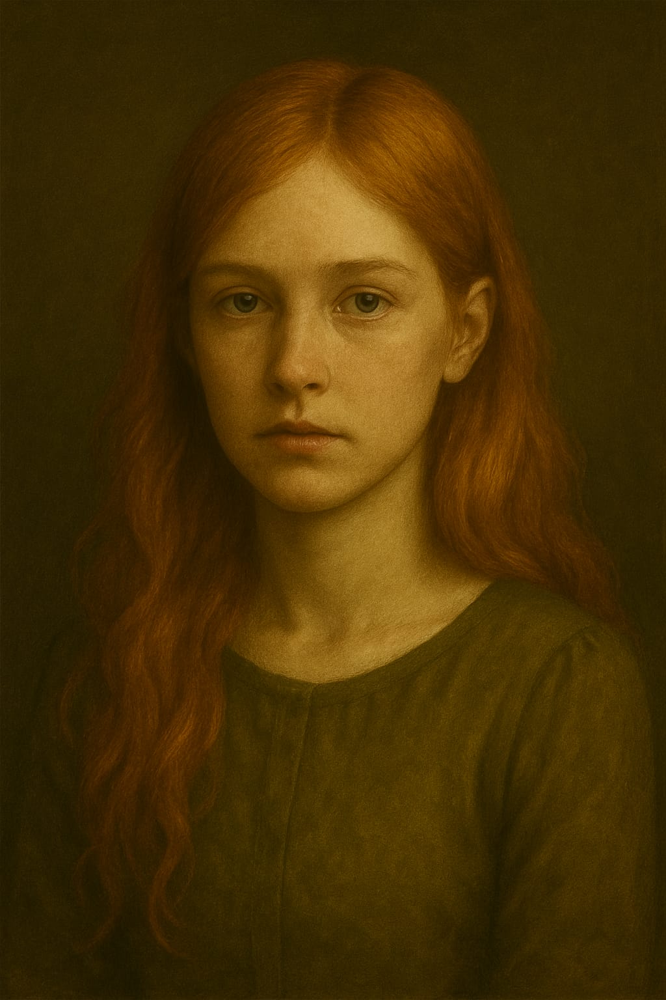
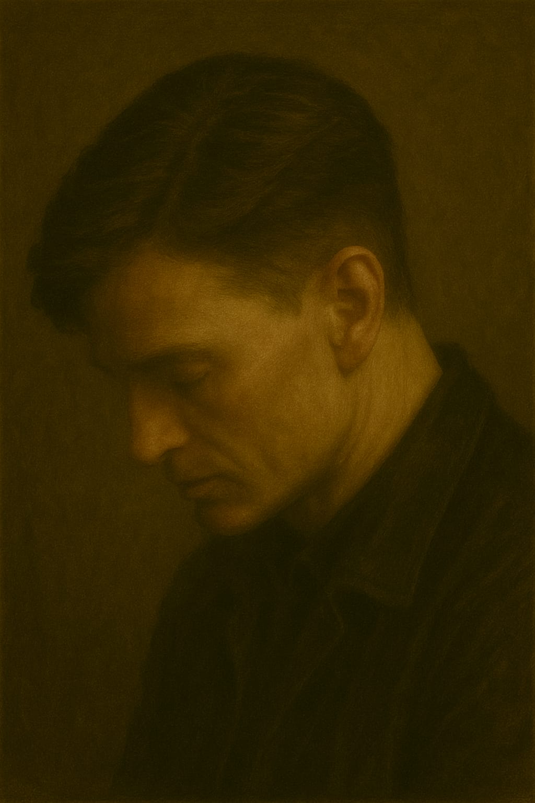
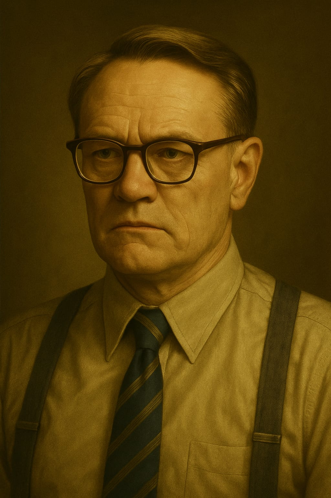
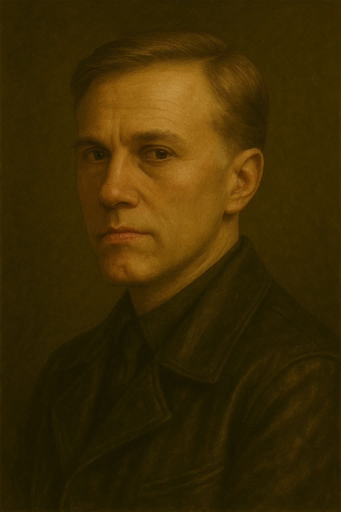
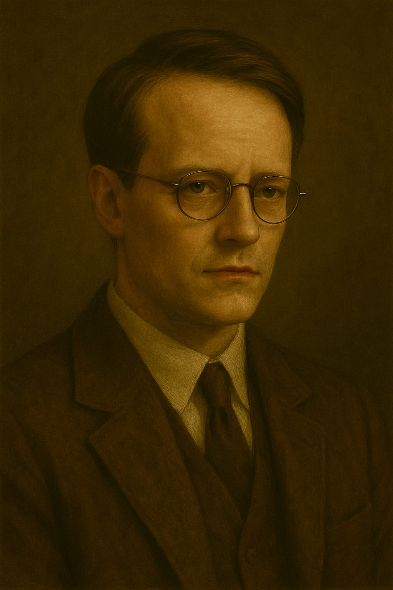
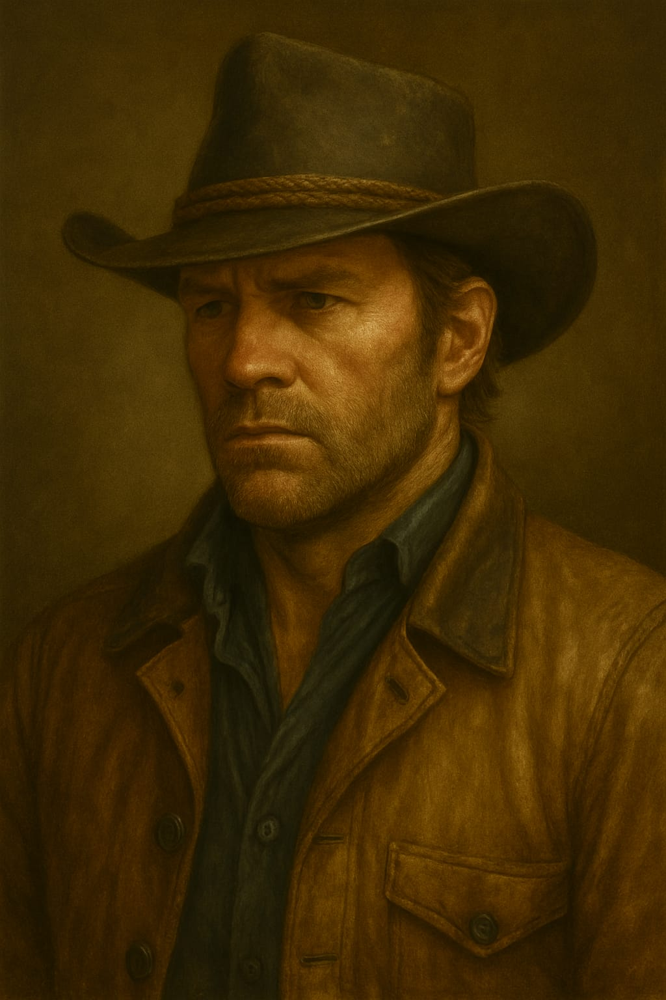
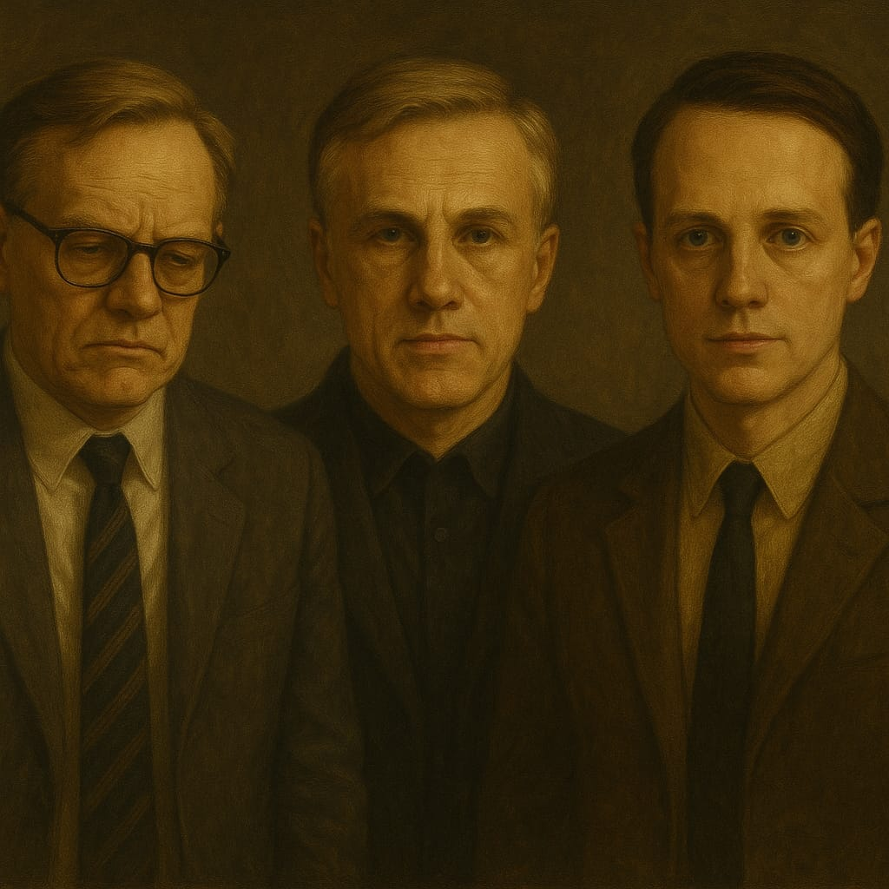
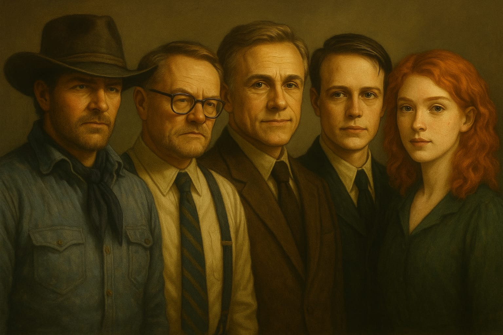
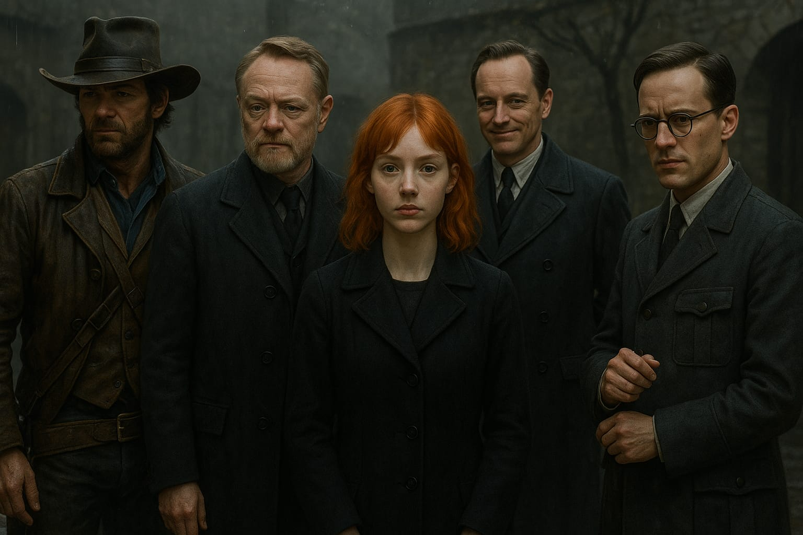

← Limana Dön
Sessizliğin Yüzleri
Sayfaların Arasındaki Suretler

Turuncu Saçlı Kız
Turuncu Saçlı Kız

Murphy
Kayıp Duyular Atlası

Harris
Beynin Sessiz Fırtınaları

Landa
Beynin Sessiz Fırtınaları

Diehl
Beynin Sessiz Fırtınaları

Morgan
Beynin Sessiz Fırtınaları

Harris, Landa & Diehl
Beynin Sessiz Fırtınaları

Kaderin Ekibi
Beynin Sessiz Fırtınaları

Kaosun Elitleri
Beynin Sessiz Fırtınaları